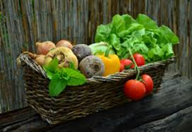
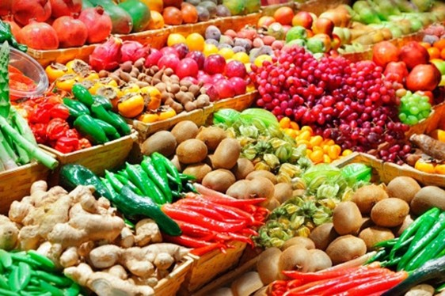
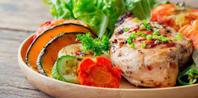

Conhecendo os alimentos: Do natural aos industrializados
Alimentos in natura são obtidos diretamente da natureza (plantas ou animais) sem alterações após a colheita ou abate, mantendo seus nutrientes originais e sem processamento industrial.
In natura é o estado original, ou seja alimentos minimamente processados passando apenas por limpeza, moagem ou secagem, mas sem adição de substâncias novas.
Exemplos incluem: frutas, legumes, verduras, ovos, carnes, grãos e leite.
Eles são fundamentais para a saúde porque fornecem a base nutricional que o corpo humano evoluiu para processar, sem os danos causados pelos aditivos químicos industriais.

